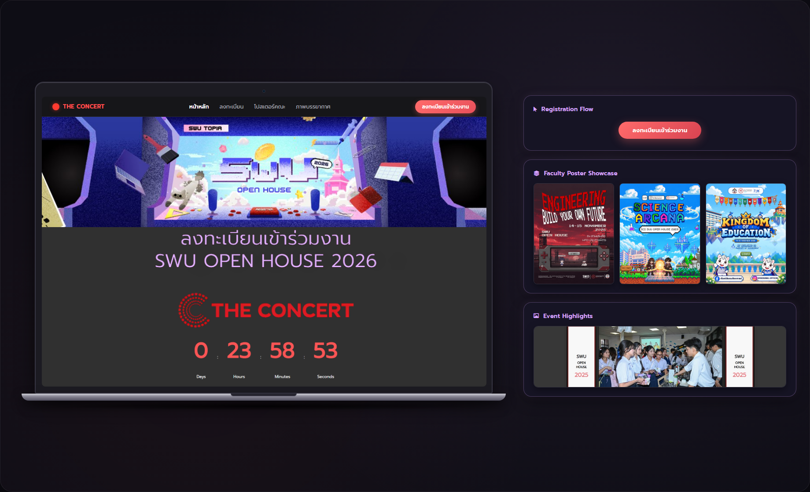
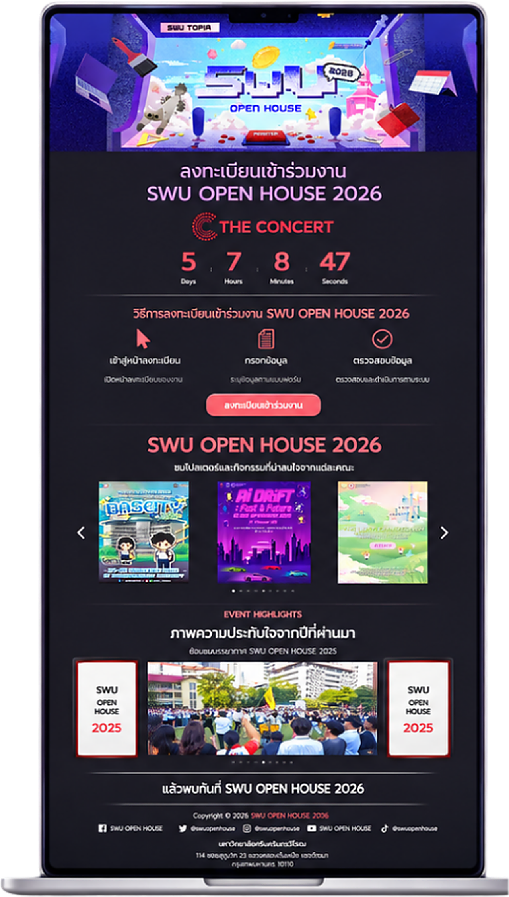

SWU OPEN HOUSE 2026: Website Enhancement & UX/UI
A comprehensive front-end enhancement and UX/UI overhaul for Srinakharinwirot University's flagship annual open house web portal, delivering a streamlined 3-step registration flow, interactive faculty poster gallery, live countdown timer, and responsive design system.

Transforming university open house onboarding
The Challenge: SWU Open House is one of Thailand's largest annual higher-education events, welcoming tens of thousands of high school students and parents across dozens of academic programs. Previous iterations suffered from fragmented event schedules, multi-step registration friction, and poor mobile navigation during high-concurrency traffic surges.
The Objective: Deliver a clean, mobile-first responsive web portal that integrates directly with THE CONCERT ticketing platform, highlights academic curricula across all faculties in an interactive gallery, and keeps visitors informed with live countdown updates.
Key features and UX enhancements
Deconstructed the ticketing onboarding into 3 guided steps: Portal Entry → Information Input → Verification, minimizing bounce rates.
Built an interactive carousel gallery highlighting key activities, workshops, and posters across every university faculty.
Integrated a real-time countdown timer counting days, hours, minutes, and seconds to amplify excitement leading to opening day.
Curated previous year highlights and unified official social channels across Facebook, X, Instagram, YouTube, and TikTok.
Mobile-first end-to-end user journey

Structured for Rapid Content Discovery
- 1. Hero & Countdown: Immediate brand identity with the "SWU TOPIA" theme and instant registration countdown badge.
- 2. Visual How-To-Register: Step-by-step visual onboarding reducing customer inquiries.
- 3. Faculty Showcase Grid: High-impact visual posters enabling one-tap access to curriculum details.
- 4. Photo Memories & Highlights: Authentic campus snapshots highlighting student life and club activities.
- 5. Consolidated Footer: Legal copyright, university address, and verified social media handles.
Typography, palette, and styling principles
Typography: Implemented Prompt for both Thai and English typography. Its clean sans-serif geometry provides excellent readability across mobile viewports while maintaining an energetic, modern campus personality.
Engineering stack and tooling
The platform was engineered on WordPress with Elementor for flexible component composition, enhanced by bespoke Custom CSS for micro-animations, custom countdown logic, and touch-optimized carousel behavior.